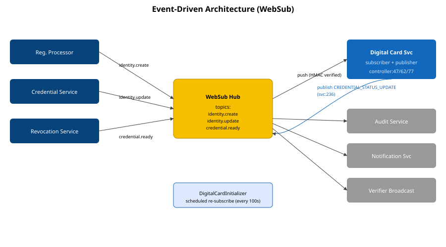

Scalability Blueprint
Path from baseline ~30-50 cards/min to target 300-500 cards/min via async workers, caching, replica scale, and connection-pool tuning.

Scaling Math
| Lever | Current | Target | Throughput Δ |
|---|---|---|---|
| Async PDF workers | 0 (sync, in-thread) | 5 worker pods × 10 threads | ~5× |
| Replica count | 1 (helm/values.yaml:27) | 3 + HPA to 8 | ~3× |
| Cache identity-mapping JSON | re-fetched per card | Caffeine 1h TTL | ~1.4× |
| DB pool | defaults (10) | 25 per replica | enables others |
| Scheduler pool | 5 (DigitalCardApplication.java:29) | dedicated PDF executor 20 | enables async |
Aggregate: 30 → 30 × 5 × 3 × 1.4 = ~630 cards/min ceiling; we throttle to 500 to leave headroom.
Recommended Topology
- API tier: 3 replicas behind Istio VirtualService (already templated).
- Worker tier: separate Deployment consuming Kafka topic
digitalcard.pdf.requests. - Cache: Redis (3-node) for identity mapping + signing cert.
- Storage: PostgreSQL with read replica for status queries.